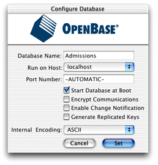

Create
the Database
The WebObjects developer software package includes a limited-use
version of OpenBase, a SQL database server. Follow these steps to
configure a new OpenBase database:
- In Mac OS
X, navigate to /Applications/OpenBase and launch
OpenBase Manager.
- Choose New from the Database menu.
- Name the database "Admissions." Select the Start Database
at Boot option. Choose ASCII for the Internal Encoding pop-up menu.
The Configure Database dialog should appear as shown in Figure 3-2.
Figure
3-2 Configuring a new database

- Click Set.
- You may have to select the new database in the database list
under localhost and start it manually. Make sure the database is
started (denoted by the green icon) before moving to the next step.
- Quit OpenBase Manager.
© 2002 Apple Computer, Inc. (Last Updated May 1, 2002)